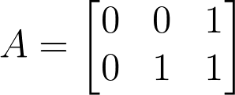
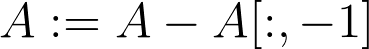
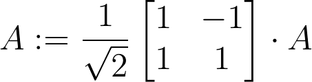
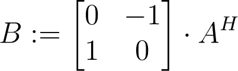
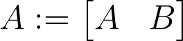

This is a program that incorporates concepts from Linear Algebra to generate progressive tiers of the Heighway Dragon Curve. In this program, I create a 2xn matrix called A that stores n points which are used to draw the Dragon Curve. Initially, A stores 3 points:
This represents the first tier of the dragon curve which consists of lines going from the point (0, 0) to (0, 1) to (1, 1). To create the next tier, the program goes through a series of steps. It first shifts the coordinate system such that last point in the A matrix becomes (0, 0). This is done by subtracting the last point of the matrix from each of the points in the matrix:
The next step is to rotate the coordinate system around the origin by 45 degrees. This is where I can apply the Linear Algebra concept of linear transformations. I can multiply the A matrix by a specific matrix that transforms the coordinate system such that the point (1, 0) is mapped to (√2/2, √2/2):
Next we need to create a second matrix, B, that will be created by taking matrix A, getting rid of the last point, flipping the matrix horizontally and then rotating the coordinate system of the matrix by 90 degrees using a linear transormation as before. Let's say A^H is a matrix that represents A after the last point is removed and it has been flipped horizontally. We will then apply the 90 degree transformation like so:
Finally, we need to concatenate matrices A and B to get the new matrix A with the next tier dragon curve:
This process is repeated everytime the dragon curve goes from one tier to the next. In the gif shown at the top of the screen, the program performs this procedure 14 times to go from a tier 1 dragon curve to a tier 15 dragon curve. In theory, this program could continue to higher tiers, but since amount of data store in the A matrix grows exponentially with respect to the tier, it quickly takes more space than is available in RAM.
Here's a link to the code for this project: Dragon Curve